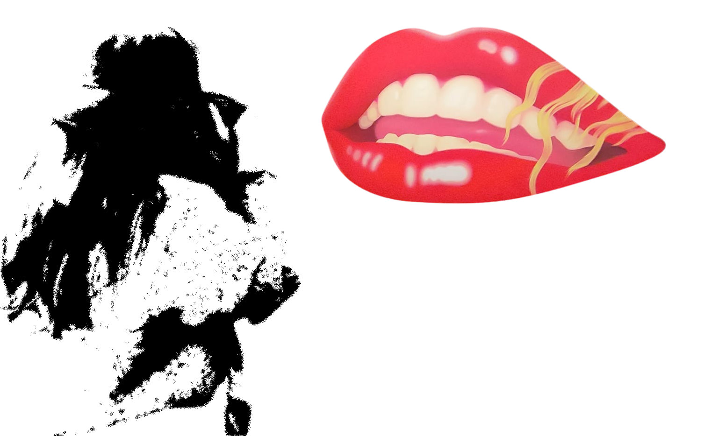

S A T U R E J A
- Passionate about collecting little moments of life.
- Studied a bit of art during highschool and missed creating what I imagine.
- Also miss the texture of flour glue.
- Using the pseudonym Satureja, which is the latin name of savory, a mediterranean herb from the Lamiaceae family that enters the composition of herbes de Provence.
- From France.
Artistic practices
- Photography, editing
- Video editing
- Land art
- Music
Softwares and apps...
I use
- Inkscape
- Lightroom
- Microsoft Powerpoint
- Inshot
I am learning
- TouchDesigner
Favourite...
- Colour: bright colours such as magenta or orange, and all shades of green
- Metazoa: ctenophores
- Angiosperm families: Orobanchaceae, Ericaceae, Liliaceae
- Film: Only Lovers Left Alive, Jim Jarmusch, 2013
- Composer: Bach
- Actresses: Tilda Swinton, Cate Blanchett, Mia Wasikowska
- Ice cream flavour: yoghurt

Photographing Mouth 14 Marylin by Tom Wesselmann at the Fondation Louis Vuitton, Paris, 01/12/24.